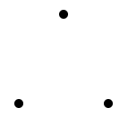
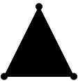
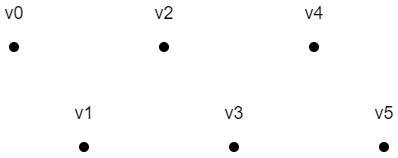
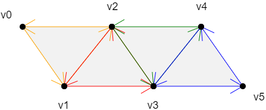
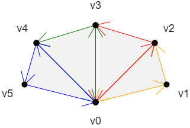
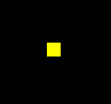
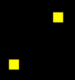

前言
三角形是一个最简单、最稳定的面，webgl 中的三维模型都是由三角面组成的。咱们这一篇就说一下三角形的绘制方法。
课堂目标
- 理解多点绘图原理。
- 可以绘制三角形，并将其组合成多边形。
知识点
- 缓冲区对象
- 点、线、面图形
第一章 webgl 的绘图方式
我们先看一下webgl是怎么画图的。
绘制多点

如果是线，就连点成线
如果是面，那就在图形内部，逐片元填色

webgl 的绘图方式就这么简单，接下咱们就说一下这个绘图方式在程序中是如何实现的。
第二章 绘制多点
在webgl 里所有的图形都是由顶点连接而成的，咱们就先画三个可以构成三角形的点。
这里大家还要注意一下，我现在要画的多点是可以被webgl 加工成线、或者面的，这和我们上一篇单纯的想要绘制多个点是不一样的。
1-绘制多点的整体步骤
建立着色器源文件
<script id="vertexShader" type="x-shader/x-vertex"> attribute vec4 a_Position; void main(){ gl_Position = a_Position; gl_PointSize = 20.0; } </script> <script id="fragmentShader" type="x-shader/x-fragment"> void main(){ gl_FragColor=vec4(1.0,1.0,0.0,1.0); } </script>获取webgl 上下文
const canvas = document.getElementById('canvas'); canvas.width=window.innerWidth; canvas.height=window.innerHeight; const gl = canvas.getContext('webgl');初始化着色器
const vsSource = document.getElementById('vertexShader').innerText; const fsSource = document.getElementById('fragmentShader').innerText; initShaders(gl, vsSource, fsSource);设置顶点点位
const vertices=new Float32Array([ 0.0, 0.1, -0.1,-0.1, 0.1, -0.1 ]) const vertexBuffer=gl.createBuffer(); gl.bindBuffer(gl.ARRAY_BUFFER,vertexBuffer); gl.bufferData(gl.ARRAY_BUFFER,vertices,gl.STATIC_DRAW); const a_Position=gl.getAttribLocation(gl.program,'a_Position'); gl.vertexAttribPointer(a_Position,2,gl.FLOAT,false,0,0); gl.enableVertexAttribArray(a_Position);清理画布
gl.clearColor(0.0, 0.0, 0.0, 1.0); gl.clear(gl.COLOR_BUFFER_BIT);绘图
gl.drawArrays(gl.POINTS, 0, 3);
实际效果：
上面的步骤，主要是先给大家一睹为快，其具体原理，咱们后面细说。
2-绘制多点详解
首先咱们先从概念上疏通一下。
我们在用js定点位的时候，肯定是要建立一份顶点数据的，这份顶点数据是给谁的呢？肯定是给着色器的，因为着色器需要这份顶点数据绘图。
然而，我们在js中建立顶点数据，着色器肯定是拿不到的，这是语言不通导致的。
为了解决这个问题，webgl 系统就建立了一个能翻译双方语言的缓冲区。js 可以用特定的方法把数据存在这个缓冲区中，着色器可以从缓冲区中拿到相应的数据。
接下来咱们就看一下这个缓冲区是如何建的，着色器又是如何从其中拿数据的。
- 建立顶点数据，两个浮点数构成一个顶点，分别代表x、y 值。
const vertices=new Float32Array([
//x y
0.0, 0.1, //顶点
-0.1,-0.1, //顶点
0.1, -0.1 //顶点
])
现在上面的这些顶点数据是存储在js 缓存里的，着色器拿不到，所以咱们需要建立一个着色器和js 都能进入的公共区。
- 建立缓冲对象。
const vertexBuffer=gl.createBuffer();
现在上面的这个缓冲区是独立存在的，它只是一个空着的仓库，和谁都没有关系。接下来咱们就让其和着色器建立连接。
- 绑定缓冲对象。
gl.bindBuffer(gl.ARRAY_BUFFER,vertexBuffer);
gl.bindBuffer(target,buffer) 绑定缓冲区
- target 要把缓冲区放在webgl 系统中的什么位置
- buffer 缓冲区
着色器对象在执行initShaders() 初始化方法的时候，已经被写入webgl 上下文对象gl 中了。
当缓冲区和着色器建立了绑定关系，我们就可以往这块空间写入数据了
- 往缓冲区对象中写入数据
gl.bufferData(gl.ARRAY_BUFFER,vertices,gl.STATIC_DRAW);
bufferData(target, data, usage) 将数据写入缓冲区
- target 要把缓冲区放在webgl 系统中的什么位置
- data 数据
- usage 向缓冲区写入数据的方式，咱们在这里先知道 gl.STATIC_DRAW 方式即可，它是向缓冲区中一次性写入数据，着色器会绘制多次。
现在着色器虽然绑定了缓冲区，可以访问里面的数据了，但是我们还得让着色器知道这个仓库是给哪个变量的，比如咱们这里用于控制点位的attribute 变量。这样做是为了提高绘图效率。
- 将缓冲区对象分配给attribute 变量
const a_Position=gl.getAttribLocation(gl.program,'a_Position');
gl.vertexAttribPointer(a_Position,2,gl.FLOAT,false,0,0);
gl.vertexAttribPointer(local,size,type,normalized,stride,offset) 将缓冲区对象分配给attribute 变量
- local attribute变量
- size 顶点分量的个数，比如我们的vertices 数组中，两个数据表示一个顶点，那咱们就写2
- type 数据类型，比如 gl.FLOAT 浮点型
- normalized 是否将顶点数据归一
- stride 相邻两个顶点间的字节数，我的例子里写的是0，那就是顶点之间是紧挨着的
- offset 从缓冲区的什么位置开始存储变量，我的例子里写的是0，那就是从头开始存储变量
到了这里，着色就知道缓冲区的数据是给谁的了。因为咱们缓冲区里的顶点数据是数组，里面有多个顶点。所以我们得开启一个让着色器批量处理顶点数据的属性。默认着色器只会一个一个的接收顶点数据，然后一个一个的绘制顶点。
- 开启顶点数据的批处理功能。
gl.enableVertexAttribArray(a_Position);
- location attribute变量
好啦，现在已经是万事俱备，只欠绘图了。
- 绘图
gl.clearColor(0.0, 0.0, 0.0, 1.0);
gl.clear(gl.COLOR_BUFFER_BIT);
gl.drawArrays(gl.POINTS, 0, 3);
drawArrays(mode,first,count)
- mode 绘图模式，比如 gl.POINTS 画点
- first 从哪个顶点开始绘制
- count 要画多少个顶点
关于绘制多点，我就说到这，接下来咱们说一下基于多点绘制图形。
第三章 绘制图形
在数学中，我们知道，三个点可以确定一个唯一的三角面。接下来咱们画一下。
1-绘制三角面
我们在之前绘制多点的基础上做一下修改。
- 顶点着色器中的gl_PointSize = 20.0 不要，因为这个属性是控制顶点大小的，咱们已经不需要显示顶点了。
<script id="vertexShader" type="x-shader/x-vertex">
attribute vec4 a_Position;
void main(){
gl_Position = a_Position;
//gl_PointSize = 20.0;
}
</script>
- 在js 中修改绘图方式
// gl.drawArrays(gl.POINTS, 0, 3);
gl.drawArrays(gl.TRIANGLES, 0, 3);
上面的gl.TRIANGLES 就是绘制三角面的意思。
看一下效果：
webgl 既然可以画面了，那它是否可以画线呢，这个是必须可以，我们可以在gl.drawArrays() 方法的第一个参数里进行设置。
2-基本图形
gl.drawArrays(mode,first,count) 方法可以绘制一下图形：
- POINTS 可视的点
- LINES 单独线段
- LINE_STRIP 线条
- LINE_LOOP 闭合线条
- TRIANGLES 单独三角形
- TRIANGLE_STRIP 三角带
- TRIANGLE_FAN 三角扇
上面的POINTS 比较好理解，就是一个个可视的点。
线和面的绘制方式各有三种，咱们接下来就详细说一下。
2-1-点的绘制
POINTS 可视的点

上面六个点的绘制顺序是：v0, v1, v2, v3, v4, v5
2-2-线的绘制
- LINES 单独线段

上面三条有向线段的绘制顺序是：
v0>v1
v2>v3
v4>v5
- LINE_STRIP 线条
上面线条的绘制顺序是：v0>v1>v2>v3>v4>v5
- LINE_LOOP 闭合线条

上面线条的绘制顺序是：v0>v1>v2>v3>v4>v5>v0
2-3-面的绘制
对于面的绘制，我们首先要知道一个原理：
- 面有正反两面。
- 面向我们的面，如果是正面，那它必然是逆时针绘制的；
- 面向我们的面，如果是反面，那它必然是顺时针绘制的；
接下来，咱们看一下面的三种绘制方式：
- TRIANGLES 单独三角形

上面两个面的绘制顺序是：
v0>v1>v2
v3>v4>v5
- TRIANGLE_STRIP 三角带

上面四个面的绘制顺序是：
v0>v1>v2
以上一个三角形的第二条边+下一个点为基础，以和第二条边相反的方向绘制三角形
v2>v1>v3
以上一个三角形的第三条边+下一个点为基础，以和第二条边相反的方向绘制三角形
v2>v3>v4
以上一个三角形的第二条边+下一个点为基础，以和第二条边相反的方向绘制三角形
v4>v3>v5
规律：
第一个三角形：v0>v1>v2
第偶数个三角形：以上一个三角形的第二条边+下一个点为基础，以和第二条边相反的方向绘制三角形
第奇数个三角形：以上一个三角形的第三条边+下一个点为基础，以和第二条边相反的方向绘制三角形
- TRIANGLE_FAN 三角扇

上面四个面的绘制顺序是：
v0>v1>v2
以上一个三角形的第三条边+下一个点为基础，按照和第三条边相反的顺序，绘制三角形
v0>v2>v3
以上一个三角形的第三条边+下一个点为基础，按照和第三条边相反的顺序，绘制三角形
v0>v3>v4
以上一个三角形的第三条边+下一个点为基础，按照和第三条边相反的顺序，绘制三角形
v0>v4>v5
关于webgl 可以绘制的基本图像就说到这，接下来咱们画个矩形面，练一下手。
3-实例：绘制矩形面
首先，我们要知道，webgl 可以绘制的面只有三角面，所以咱们要绘制矩形面的话，只能用两个三角形去拼。
接下咱们就说一下如何用三角形拼矩形。
4-1-三角形拼矩形的方法
我们可以用TRIANGLE_STRIP 三角带拼矩形。
下面的两个三角形分别是：
v0>v1>v2
v2>v1>v3

4-2-代码实现
- 建立顶点数据
const vertices=new Float32Array([
-0.2, 0.2,
-0.2,-0.2,
0.2, 0.2,
0.2,-0.2,
])
上面两个浮点代表一个顶点，依次是v0、v1、v2、v3，如上图所示。
- 绘图
gl.drawArrays(gl.TRIANGLE_STRIP, 0, 4);
上面参数的意思分别是：三角带、从第0个顶点开始画、画四个。
效果如下：
关于矩形的绘制就这么简单，接下来咱们可以去尝试其它的图形。
比如：把TRIANGLE_STRIP 三角带变成TRIANGLE_FAN 扇形
gl.drawArrays(gl.TRIANGLE_FAN, 0, 4);
画出了一个三角带的样子：
其绘图顺序是：
v0>v1>v2
v0>v2>v3
关于基本图形的绘制，咱们就说到这。
第四章 异步绘制多点
在项目实战的时候，用户交互事件是必不可少的。因为事件是异步的，所以我们在绘图的时候，必须要考虑异步绘图。
接下来我通过一个例子来说一下异步绘制多点的方法。
1-异步绘制线段
1.先画一个点

2.一秒钟后，在左下角画一个点

3.两秒钟后，我再画一条线段
接下来看一下代码实现：
1.顶点着色器和片元着色器
<!-- 顶点着色器 -->
<script id="vertexShader" type="x-shader/x-vertex">
attribute vec4 a_Position;
void main(){
gl_Position=a_Position;
gl_PointSize=20.0;
}
</script>
<!-- 片元着色器 -->
<script id="fragmentShader" type="x-shader/x-fragment">
void main(){
gl_FragColor=vec4(1,1,0,1);
}
</script>
2.初始化着色器
import { initShaders } from "../jsm/Utils.js";
const canvas = document.querySelector("#canvas");
canvas.width = window.innerWidth;
canvas.height = window.innerHeight;
// 获取着色器文本
const vsSource = document.querySelector("#vertexShader").innerText;
const fsSource = document.querySelector("#fragmentShader").innerText;
//三维画笔
const gl = canvas.getContext("webgl");
//初始化着色器
initShaders(gl, vsSource, fsSource);
3.建立缓冲对象，并将其绑定到webgl 上下文对象上，然后向其中写入顶点数据。将缓冲对象交给attribute变量，并开启attribute 变量的批处理功能。
//顶点数据
let points=[0, 0.2]
//缓冲对象
const vertexBuffer = gl.createBuffer();
//绑定缓冲对象
gl.bindBuffer(gl.ARRAY_BUFFER, vertexBuffer);
//写入数据
gl.bufferData(gl.ARRAY_BUFFER,new Float32Array(points),gl.STATIC_DRAW)
//获取attribute 变量
const a_Position=gl.getAttribLocation(gl.program, 'a_Position')
//修改attribute 变量
gl.vertexAttribPointer(a_Position, 2, gl.FLOAT, false, 0, 0)
//赋能-批处理
gl.enableVertexAttribArray(a_Position)
4.刷底色并绘制顶点
//声明颜色 rgba
gl.clearColor(0, 0, 0, 1);
//刷底色
gl.clear(gl.COLOR_BUFFER_BIT);
//绘制顶点
gl.drawArrays(gl.POINTS, 0, 1);
5.一秒钟后，向顶点数据中再添加的一个顶点，修改缓冲区数据，然后清理画布，绘制顶点
setTimeout(()=>{
points.push(-0.2,-0.1)
gl.bufferData(gl.ARRAY_BUFFER,new Float32Array(points),gl.STATIC_DRAW)
gl.clear(gl.COLOR_BUFFER_BIT);
gl.drawArrays(gl.POINTS, 0, 2);
},1000)
6.两秒钟后，清理画布，绘制顶点，绘制线条
setTimeout(()=>{
gl.clear(gl.COLOR_BUFFER_BIT);
gl.drawArrays(gl.POINTS, 0, 2);
gl.drawArrays(gl.LINE_STRIP, 0, 2);
},2000)
总结一下上面的原理，当缓冲区被绑定在了webgl 上下文对象上后，我们在异步方法里直接对其进行修改即可，顶点着色器在绘图的时候会自动从其中调用数据。
WebGLBuffer缓冲区中的数据在异步方法里不会被重新置空。
理解了异步绘图原理后，我们还可以对这种图形的绘制进行一个简单的封装。
2-封装多边形对象
建立一个Poly 对象，这个对象是辅助我们理解这一篇的知识的，没做太深层次的考量，因为有的知识点我们还没有讲到。
const defAttr=()=>({
gl:null,
vertices:[],
geoData:[],
size:2,
attrName:'a_Position',
count:0,
types:['POINTS'],
})
export default class Poly{
constructor(attr){
Object.assign(this,defAttr(),attr)
this.init()
}
init(){
const {attrName,size,gl}=this
if(!gl){return}
const vertexBuffer = gl.createBuffer()
gl.bindBuffer(gl.ARRAY_BUFFER, vertexBuffer)
this.updateBuffer()
const a_Position=gl.getAttribLocation(gl.program,attrName)
gl.vertexAttribPointer(a_Position, size, gl.FLOAT, false, 0, 0)
gl.enableVertexAttribArray(a_Position)
}
addVertice(...params){
this.vertices.push(...params)
this.updateBuffer()
}
popVertice(){
const {vertices,size}=this
const len=vertices.length
vertices.splice(len-size,len)
this.updateCount()
}
setVertice(ind,...params){
const {vertices,size}=this
const i=ind*size
params.forEach((param,paramInd)=>{
vertices[i+paramInd]=param
})
}
updateBuffer(){
const {gl,vertices}=this
this.updateCount()
gl.bufferData(gl.ARRAY_BUFFER,new Float32Array(vertices),gl.STATIC_DRAW)
}
updateCount(){
this.count=this.vertices.length/this.size
}
updateVertices(params){
const {geoData}=this
const vertices=[]
geoData.forEach(data=>{
params.forEach(key=>{
vertices.push(data[key])
})
})
this.vertices=vertices
}
draw(types=this.types){
const {gl,count}=this
for(let type of types){
gl.drawArrays(gl[type],0,count);
}
}
}
属性：
- gl webgl上下文对象
- vertices 顶点数据集合，在被赋值的时候会做两件事
- 更新count 顶点数量，数据运算尽量不放渲染方法里
- 向缓冲区内写入顶点数据
- geoData 模型数据，对象数组，可解析出vertices 顶点数据
- size 顶点分量的数目
- positionName 代表顶点位置的attribute 变量名
- count 顶点数量
- types 绘图方式，可以用多种方式绘图
方法
init() 初始化方法，建立缓冲对象，并将其绑定到webgl 上下文对象上，然后向其中写入顶点数据。将缓冲对象交给attribute变量，并开启attribute 变量的批处理功能。
addVertice() 添加顶点
popVertice() 删除最后一个顶点
setVertice() 根据索引位置设置顶点
updateBuffer() 更新缓冲区数据，同时更新顶点数量
updateCount() 更新顶点数量
updateVertices() 基于geoData 解析出vetices 数据
draw() 绘图方法
接下来就可以用Poly 对象实现之前的案例了。
const poly=new Poly({
gl,
vertices:[0, 0.2]
})
poly.draw(['POINTS'])
setTimeout(()=>{
poly.addVertice(-0.2,-0.1)
gl.clear(gl.COLOR_BUFFER_BIT);
poly.draw(['POINTS'])
},1000)
setTimeout(()=>{
gl.clear(gl.COLOR_BUFFER_BIT);
poly.draw(['POINTS','LINE_STRIP'])
},2000)
异步绘图原理跑通了，我们也就可以用鼠标绘制线条了。
//实例化多边形
const poly=new Poly({
gl,
types:['POINTS','LINE_STRIP']
})
// 鼠标点击事件
canvas.addEventListener("click", (event) => {
const {x,y}=getMousePosInWebgl(event,canvas)
poly.addVertice(x,y)
gl.clear(gl.COLOR_BUFFER_BIT);
poly.draw()
});
当前我们所能画的是一条线条，如果我们想要绘制多条线呢？就比如我们要画一个狮子座。
3-绘制多线
既然是多线，那就需要有个容器来承载它们，这样方便管理。
3-1-建立容器对象
建立一个Sky 对象，作为承载多边形的容器。
export default class Sky{
constructor(gl){
this.gl=gl
this.children=[]
}
add(obj){
obj.gl=this.gl
this.children.push(obj)
}
updateVertices(params){
this.children.forEach(ele=>{
ele.updateVertices(params)
})
}
draw(){
this.children.forEach(ele=>{
ele.init()
ele.draw()
})
}
}
属性：
- gl webgl上下文对象
- children 子级
方法：
- add() 添加子对象
- updateVertices() 更新子对象的顶点数据
- draw() 遍历子对象绘图，每个子对象对应一个buffer 对象，所以在子对象绘图之前要先初始化。
3-2-示例
想象一个场景：鼠标点击画布，绘制多边形路径。鼠标右击，取消绘制。鼠标再次点击，绘制新的多边形。
//夜空
const sky=new Sky(gl)
//当前正在绘制的多边形
let poly=null
//取消右击提示
canvas.oncontextmenu = function(){
return false;
}
// 鼠标点击事件
canvas.addEventListener("mousedown", (event) => {
if(event.button===2){
popVertice()
}else{
const {x,y}=getMousePosInWebgl(event,canvas)
if(poly){
poly.addVertice(x,y)
}else{
crtPoly(x,y)
}
}
render()
});
//鼠标移动
canvas.addEventListener("mousemove", (event) => {
if(poly){
const {x,y}=getMousePosInWebgl(event,canvas)
poly.setVertice(poly.count-1,x,y)
render()
}
});
//删除最后一个顶点
function popVertice(){
poly.popVertice()
poly=null
}
//创建多边形
function crtPoly(x,y){
poly=new Poly({
vertices:[x,y,x,y],
types:['POINTS','LINE_STRIP']
})
sky.add(poly)
}
// 渲染方法
function render(){
gl.clear(gl.COLOR_BUFFER_BIT)
sky.draw()
}
最后，用一个完整的例子结束这一篇的知识。
案例-狮子座
接下来，我要在下图中绘制狮子座。
效果如下
1-产品需求
1-1-基本绘图需求
- 鼠标第1次点击画布时：
- 创建多边形
- 绘制2个点
- 鼠标移动时：
- 当前多边形最后一个顶点随鼠标移动
- 鼠标接下来点击画布时：
- 新建一个点
- 鼠标右击时：
- 删除最后一个随鼠标移动的点
1-2-优化需求
- 顶点要有闪烁动画
- 建立顶点的时候，如果鼠标点击了其它顶点，就不要再显示新的顶点
对于上面的基本需求，我们在用鼠标画多线的时候，已经实现了，接下来我们直接实现优化需求。
2-代码实现
1.建立顶点着色器
<script id="vertexShader" type="x-shader/x-vertex">
attribute vec4 a_Attr;
varying float v_Alpha;
void main(){
gl_Position=vec4(a_Attr.x,a_Attr.y,0.0,1.0);
gl_PointSize=a_Attr.z;
v_Alpha=a_Attr.w;
}
</script>
- a_Attr() 是一个4维向量，其参数结构为(x,y,z,w)
- x,y代表位置
- z代表顶点尺寸
- w代表顶点透明度，w会通过 varying 变量v_Alpha 传递给片元
2.建立片元着色器
<script id="fragmentShader" type="x-shader/x-fragment">
precision mediump float;
varying float v_Alpha;
void main(){
float dist=distance(gl_PointCoord,vec2(0.5,0.5));
if(dist<0.5){
gl_FragColor=vec4(0.87,0.91,1.0,v_Alpha);
}else{
discard;
}
}
</script>
通过v_Alpha接收透明度，然后设置片元的颜色。
3.建立夜空对象，用于承载多边形
const sky=new Sky(gl)
4.建立合成对象，用于对顶点数据做补间运算
const compose = new Compose();
5.声明两个变量，用于表示当前正在绘制的多边形和鼠标划上的点
//当前正在绘制的多边形
let poly=null
//鼠标划上的点
let point=null
6.取消右击提示
//取消右击提示
canvas.oncontextmenu = function(){
return false;
}
7.鼠标按下事件
// 鼠标按下事件
canvas.addEventListener("mousedown", (event) => {
if(event.button===2){
//右击删除顶点
poly&&popVertice()
}else{
const {x,y}=getMousePosInWebgl(event,canvas)
if(poly){
//连续添加顶点
addVertice(x,y)
}else{
//建立多边形
crtPoly(x,y)
}
}
});
getMousePosInWebgl() 方法是用于获取鼠标在webgl 画布中的位置，我们之前说过。
crtPoly() 创建多边形
function crtPoly(x,y){
let o1=point?point:{x,y,pointSize:random(),alpha:1}
const o2={x,y,pointSize:random(),alpha:1}
poly=new Poly({
size:4,
attrName:'a_Attr',
geoData:[o1,o2],
types:['POINTS','LINE_STRIP']
})
sky.add(poly)
crtTrack(o1)
crtTrack(o2)
}
建立两个顶点数据o1,o2，如果鼠标点击了其它顶点，o1的数据就是此顶点的数据。
顶点的尺寸是一个随机数random()
function random(){
return Math.random()*8.0+3.0
}
基于两个顶点数据，建立多边形对象和两个时间轨对象。
- crtTrack() 建立时间轨
function crtTrack(obj){
const {pointSize}=obj
const track = new Track(obj)
track.start = new Date()
track.timeLen = 2000
track.loop = true
track.keyMap = new Map([
[
"pointSize",
[
[500, pointSize],
[1000, 0],
[1500, pointSize],
],
],
[
"alpha",
[
[500, 1],
[1000, 0],
[1500, 1],
],
],
]);
compose.add(track)
}
- addVertice() 添加顶点
function addVertice(x,y){
const {geoData}=poly
if(point){
geoData[geoData.length-1]=point
}
let obj={x,y,pointSize:random(),alpha:1}
geoData.push(obj)
crtTrack(obj)
}
如果鼠标点击了其它顶点，就让多边形的最后一个顶点数据为此顶点。
建立下一个顶点的顶点数据，添加新的顶点，建立新的时间轨。
- popVertice() 删除最后一个顶点
function popVertice(){
poly.geoData.pop()
compose.children.pop()
poly=null
}
8.鼠标移动事件
canvas.addEventListener("mousemove", (event) => {
const {x,y}=getMousePosInWebgl(event,canvas)
point=hoverPoint(x,y)
if(point){
canvas.style.cursor='pointer'
}else{
canvas.style.cursor='default'
}
if(poly){
const obj=poly.geoData[poly.geoData.length-1]
obj.x=x
obj.y=y
}
});
基于鼠标是否划上顶点，设置鼠标的视觉状态。
设置正在绘制的多边形的最后一个顶点点位。
- hoverPoint() 检测所有顶点的鼠标划入，返回顶点数据
function hoverPoint(mx,my){
for(let {geoData} of sky.children){
for(let obj of geoData){
if(poly&&obj===poly.geoData[poly.geoData.length-1]){
continue
}
const delta={
x:mx-obj.x,
y:my-obj.y
}
const {x,y}=glToCssPos(delta,canvas)
const dist=x*x+y*y;
if(dist<100){
return obj
}
}
}
return null
}
遍历sky 中的所有顶点数据
忽略绘图时随鼠标移动的点
获取鼠标和顶点的像素距离
若此距离小于10像素，返回此点；否则，返回null。
- glToCssPos() webgl坐标系转css坐标系，将之前说过的getMousePosInWebgl() 方法逆向思维即可
function glToCssPos({x,y},{width,height}){
const [halfWidth, halfHeight] = [width / 2, height / 2]
return {
x:x*halfWidth,
y:-y*halfHeight
}
}
9.连续渲染方法
!(function ani() {
compose.update(new Date())
sky.updateVertices(['x','y','pointSize','alpha'])
render()
requestAnimationFrame(ani)
})();
- 更新动画数据
- 更新Vertices 数据
- render() 渲染
function render(){
gl.clear(gl.COLOR_BUFFER_BIT)
sky.draw()
}
扩展-图形转面
1-webgl三种面的适应场景
之前咱们说过，webgl 可以绘制三种面：
- TRIANGLES 单独三角形
- TRIANGLE_STRIP 三角带
- TRIANGLE_FAN 三角扇
在实际的引擎开发中，TRIANGLES 是用得最多的。
TRIANGLES 的优势是可以绘制任意模型，缺点是比较费点。
适合TRIANGLES 单独三角形的的模型：
TRIANGLE_STRIP 和TRIANGLE_FAN 的优点是相邻的三角形可以共用一条边，比较省点，然而其缺点也太明显，因为它们只适合绘制具备相应特点的模型。
适合TRIANGLE_STRIP三角带的模型：
适合TRIANGLE_FAN三角扇的模型：
three.js 使用的绘制面的方式就是TRIANGLES，我们可以在其WebGLRenderer 对象的源码的renderBufferImmediate 方法中找到：
_gl.drawArrays( _gl.TRIANGLES, 0, object.count );
2-图形转面的基本步骤
在three.js 里有一个图形几何体ShapeGeometry，可以把图形变成面。
我们学到这里，只要有数学支撑，也可以实现这种效果。
接下来我要使用TRIANGLES 独立三角形的方式，将图形转成面。
我使用的方法叫做“砍角”，其原理就是从起点将多边形中符合特定条件的角逐个砍掉，然后保存到一个集合里，直到把多边形砍得只剩下一个三角形为止。这时候集合里的所有三角形就是我们想要的独立三角形。
举个例子：

已知：逆时针绘图的路径G
求：将其变成下方网格的方法

解：
1.寻找满足以下条件的▲ABC：
- ▲ABC的顶点索引位置连续，如012,123、234
- 点C在向量AB的正开半平面里，可以理解为你站在A点，面朝B点，点C要在你的左手边
- ▲ABC中没有包含路径G 中的其它顶点
2.当找到▲ABC 后，就将点B从路径的顶点集合中删掉，然后继续往后找。
3.当路径的定点集合只剩下3个点时，就结束。
4.由所有满足条件的▲ABC构成的集合就是我们要求的独立三角形集合。
3-绘制路径G
1.路径G的顶点数据
const pathData = [0, 0,
0, 600,
600, 600,
600, 200,
200, 200,
200, 400,
300, 400,
300, 300,
500, 300,
500, 500,
100, 500,
100, 100,
600, 100,
600, 0
];
在pathData里两个数字为一组，分别代表顶点的ｘ位和ｙ位。
pathData里的数据是我以像素为单位画出来的，在实际项目协作中，UI给我们的svg文件可能也是以像素为单位画出来的，这个我们要做好心理准备。
因为，webgl画布的宽和高永远都是两个单位。
所以，我们要将上面的点画到webgl 画布中，就需要做一个数据映射。
2.在webgl 中绘制正方形。
从pathData 数据中我们可以看出，路径G的宽高都是600，是一个正方形。
所以，我可以将路径G映射到webgl 画布的一个正方形中。
这个正方形的高度我可以暂且定为1，那么其宽度就应该是高度除以canvas画布的宽高比。
//宽高比
const ratio = canvas.width / canvas.height;
//正方形高度
const rectH = 1.0;
//正方形宽度
const rectW = rectH / ratio;
3.正方形的定位，把正方形放在webgl画布的中心。
获取正方形尺寸的一半，然后求出其x、y方向的两个极值即可。
//正方形宽高的一半
const [halfRectW, halfRectH] = [rectW / 2, rectH / 2];
//两个极点
const minX = -halfRectW;
const minY = -halfRectH;
const maxX = halfRectW;
const maxY = halfRectH;
我想把
4.利用之前的Poly对象绘制正方形，测试一下效果。
const rect = new Poly({
gl,
vertices: [
minX, maxY,
minX, minY,
maxX, minY,
maxX, maxY,
],
});
rect.draw();
先画了4个点，效果没问题。
5.建立x轴和y轴比例尺。
const scaleX = ScaleLinear(0, minX, 600, maxX);
const scaleY = ScaleLinear(0, minY, 600, maxY);
function ScaleLinear(ax, ay, bx, by) {
const delta = {
x: bx - ax,
y: by - ay,
};
const k = delta.y / delta.x;
const b = ay - ax * k;
return function (x) {
return k * x + b;
};
}
ScaleLinear(ax, ay, bx, by) 方法使用的就是点斜式，用于将x轴和y轴上的数据像素数据映射成 webgl数据
- ax 像素数据的极小值
- ay webgl数据的极小值
- bx 像素数据的极大值
- by webgl数据的极大值
6.将路径G中的像素数据解析为webgl 数据
const glData = [];
for (let i = 0; i < pathData.length; i += 2) {
glData.push(scaleX(pathData[i]), scaleY(pathData[i + 1]));
}
画一下看看：
const path = new Poly({
gl,
vertices: glData,
types: ["POINTS", "LINE_LOOP"],
});
path.draw();

效果没有问题。
4.将图形网格化
1.我自己建立了一个ShapeGeo 对象，用于将图形网格化。
const shapeGeo = new ShapeGeo(glData)
属性：
- pathData 平展开的路径数据
- geoData 由路径数据pathData 转成的对象型数组
- triangles 三角形集合，对象型数组
- vertices 平展开的对立三角形顶点集合
方法：
update() 更新方法，基于pathData 生成vertices
parsePath() 基于路径数据pathData 转成对象型数组
findTriangle(i) 寻找符合条件的三角形
- i 顶点在geoData 中的索引位置，表示从哪里开始寻找三角形
includePoint(triangle) 判断三角形中是否有其它顶点
inTriangle(p0, triangle) 判断一个顶点是否在三角形中
cross([p0, p1, p2]) 以p0为基点，对二维向量p0p1、p0p2做叉乘运算
upadateVertices() 基于对象数组geoData 生成平展开的vertices 数据
2.绘制G形面
const face = new Poly({
gl,
vertices: shapeGeo.vertices,
types: ["TRIANGLES"],
});
face.draw();
效果如下：

填坑
我之前在用鼠标绘制线条的时候，还留了一个系统兼容性的坑。
线条在mac电脑中是断的：
这种效果是由片元着色器导致的：
precision mediump float;
void main(){
float dist=distance(gl_PointCoord,vec2(0.5,0.5));
if(dist<0.5){
gl_FragColor=vec4(1,1,0,1);
}else{
discard;
}
}
我们在用上面的片元着色器绘图的时候，把线给过滤掉了。
因此，我需要告诉着色器当前绘图的方式，如果是POINTS 方式绘图的话，就过滤一下圆圈以外的片元，否则就正常绘图。
接下来咱们就看一下代码实现。
1.给片元着色器添加一个uniform 变量。
precision mediump float;
uniform bool u_IsPOINTS;
void main(){
if(u_IsPOINTS){
float dist=distance(gl_PointCoord,vec2(0.5,0.5));
if(dist<0.5){
gl_FragColor=vec4(1,1,0,1);
}else{
discard;
}
}else{
gl_FragColor=vec4(1,1,0,1);
}
}
2.给Poly 对象添加两个属性。
const defAttr=()=>({
circleDot:false,
u_IsPOINTS:null,
……
})
- circleDot 是否是圆点
- u_IsPOINTS uniform变量
3.在初始化方法中，如果是圆点，就获取一下uniform 变量
init(){
……
if (circleDot) {
this.u_IsPOINTS = gl.getUniformLocation(gl.program, "u_IsPOINTS");
}
}
4.在渲染的时候，如果是圆点，就基于绘图方式修改uniform 变量
draw(types=this.types){
const {gl,count,u_IsPOINTS,circleDot}=this
for (let type of types) {
circleDot&&gl.uniform1f(u_IsPOINTS,type==='POINTS');
gl.drawArrays(gl[type],0,count);
}
}
总结
在实际项目中，我们绘制完了图形，往往还会对其进行修改变换，下一篇咱们会说一下如何变换图形。